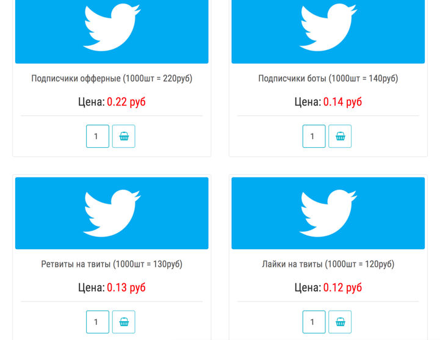

Trainees Edition
Trainers Edition
Trainees Edition
Trainers Edition
Module 4: The Role of the Internet and Social Media in the Creation of Information Pollution
Module Description
The main purpose of this Module is to explain the role of the Internet and social media in the creation of information pollution and the trustworthiness of online users.
The secondary aim is to guide trainers who want to use the content of this Module to train their trainees.
With these aims, the impact of Internet and social media on information pollution along with guidelines about how to teach the subject are presented.
Trainees who successfully complete this Module will be able to:
- understand the role of Internet and social media in the creation of information pollution
- recognize trustworthiness of online users
- recognize inauthentic online behaviours
- define and distinguish trolls, bots, and cyborgs
- understand the motivation behind inauthentic online activities
Additionally, trainers who successfully complete this Module, will be able to demonstrate an understanding of how to teach the role of the Internet and social media in the creation of information pollution and the trustworthiness of online users.
Module Structure
This Module consists of the following parts:
- Objective, Description of the Content and Learning Outcomes
- Structure of the Module
- Guidelines for Trainees
- Guidelines for Trainers (how to get prepared, methods to use and tips for trainers)
- Content (study materials and exercises)
- Quiz
- Resources (references and recommended sources and videos)
Main objectives of the Module, description of the content and the learning outcomes are explained in the Module Description part. Guidelines for Trainees includes instructions and suggestions for trainees. Guidelines for Trainers leads trainers through different phases of the training and provides tips which could be useful while teaching the subject. Content includes all study materials and the content related exercises. Quiz includes multiple choice and true/false questions for trainees to test their progress. Resources have two components: references and recommended sources for further reading and study. References is the list of sources cited in the content part. Recommended resources consist of a list of supplemental sources and videos which are highly recommended to read and watch for learning more on the topic.
Guidelines for Trainees
Trainees are expected to read the text, watch recommended videos and do the exercises. They can consult suggested resources for further information. After completing the study of the content trainees are strongly suggested to take the quiz to evaluate their progress. They can revise the study material if needed.
Guidelines for Trainers
Guidelines for trainers includes suggestions and tips for trainers about how to use the content of this Module to train people on the subject.
Getting Prepared
Preparing a presentation (PowerPoint/Prezi/Canva) which is enriched with visual materials (images and video clips) and clear solid examples is strongly suggested. It is also suggested to adapt the examples and exercises in this Module to issues which are more familiar to the actual target group. Choosing local examples (country specific) regarding the current or well known issues help to illustrate a point more clearly. It also helps to draw the attention of trainees. The more familiar and popular the examples are, the better the message will be communicated.
Getting Started
A short quiz (3 to 5 questions) in Kahoot or questions with Mentimeter can be used at the beginning for engaging participants in the topic. It can be used as a motivation tool as well as a tool to check trainees’ existing knowledge about the subject. Some examples for questions could be: What is a troll? What is a bot?
Methods to Use
Various teaching methods can be used in combination during the training. Such as:
- Lecturing
- Discussion
- Group work
- Self reflection
Tips for Trainers
Warming-up
An effective way of involving participants and setting common expectations about what they will learn is to ask a few preliminary questions on the subject. This can be done through group work by asking trainees to discuss and collect ideas, but also individually by asking each participant to write their ideas on sticky notes. The activity can be conducted as follows:
- Ask trainees whether they have ever come across inauthentic activity on social media. Why do they think it was inauthentic?
- Invite trainees to categorise the given examples and explain in what ways they differ
Presenting the Objective of the Lesson
The objective of the lesson should be made clear (which is to explain the role of the Internet and social media in the creation of information pollution and the trustworthiness of online users). Following the warming-up questions it will be easier to clarify the objectives.
Presenting the Lesson Content
While presenting the content make sure to interact with the trainees and encourage them for active participation.
- Before providing a definition of trolls, bots and cyborgs, ask participants to come up with their own.
- When introducing common forms of inauthentic activities and accounts, ask participants to give real life examples. Make comments on the examples whether or not they belong to the category you are talking about.
- When providing examples choose real world examples. And get as much information as possible about that specific case. So that if asked by trainees/participants you can provide more details.
- When you choose examples, in order to avoid confusion, make sure that they suit hundred percent well with the definition of the category you are addressing.
- Create hands-on practice opportunities for trainees whenever possible.
Concluding
Make a short summary of the lesson and ask a couple of questions which help underlying the most important messages you would like to give.
Following question can help:
- Ask trainees how they would react when they suspect inauthentic activity.
When concluding, make sure that trainees understand that there are imposter user accounts in social media and hidden purposes (mainly manipulation) behind inauthentic activities.
Content: The Role of the Internet and Social Media in the Creation of Information Pollution
Introduction
Both the emergence of the internet and the social media technologies have brought about fundamental changes to the way information is produced, communicated and distributed. Widely accessible, cheap and sophisticated editing and publishing tools and technology have made it easier for anyone to create content and speedly exchange information. Consequently, today mis/dis-information has found a new channel (Wardle & Derakhshan, 2017, p. 11-12; Tandoc, Lim & Ling, 2018, p. 139).
Today, not only how news is distributed but also how it looks has changed. A tweet, which is maximum 280 characters long, is now considered a piece of news, and Twitter became a platform especially for speedy dissemination of breaking news. Facebook is another social media platform which has become a place where users produce, consume, and exchange news along with personal updates and photos (Tandoc, Lim & Ling, 2018, p. 139).
All online platforms, especially social media provide space for non-journalists to reach a mass audience, in other words they provide opportunities for citizen journalism. Non-journalists today began to engage in journalistic activities (Robinson & DeShano, 2011, p. 965). They post information, photos and videos about breaking news stories they witnessed through their social media accounts (Jewitt, 2009, p. 231).
Social media shapes the media landscape in several ways. Firstly, content from different news providers is displayed in a single location, users no longer need to select a news source; instead they select the story itself (Messing & Westwood, 2014, p. 1044). The information source is blurred because news/information travels fast from one person/channel to the other (Tandoc, Lim & Ling, 2018, p. 139). Secondly, endorsements and social recommendations guide the selection of the content (Messing & Westwood, 2014, p. 1044). Popularity plays an important role in the dissemination. Likes, shares, or comments trigger further likes, shares, or comments (Thorson, 2008, p. 475).
Additionally, unlike legacy news media, there is no code of ethics on sharing manipulated content on social media (Tandoc, Lim & Ling, 2018, p. 144-145) and there are difficulties (which sometimes require expertise) in the verification of information in different formats such as photos and videos.
Mis/dis-information has been around since before the printing press, but the internet has allowed falsehoods, conspiracy theories and exaggerations to spread faster and farther than ever (Klepper, February 7, 2020).
The Trustworthiness of the Online Users
The trustworthiness of the users of the online communities is another problem (Ortega, Troyano, Cruz, Vallejo & Enriquez, 2012, p.2884). All the tools, as well as the talent to use them, are for sale today. Anyone can buy thousands of social media accounts or millions of email addresses and can hire writers (paid posters) who will help to propagate any message or ideology on a massive scale (Filloux, 2017).
There are companies and individuals openly selling Twitter, Facebook and YouTube followers/subscribers and engagement, retweets, and shares at reasonable prices (Barojan, November 5, 2018).

Source: Barojan, November 5, 2018
Social media is increasingly used to amplify false claims and polarize people over controversial issues. Cyborgs, trolls and bots contribute tremendously to the pollution of information online by filling the internet with disinformation (Klepper, February 7, 2020).

Source: Barojan, November 5, 2018
Trolls and Troll Farms
The word troll refers to people who intentionally initiates online conflict or offends other users to distract and sow divisions by posting inflammatory or off-topic posts in an online community or a social network (Barojan, November 5, 2018; Wardle, 2018). The goal is to provoke others into an emotional response and derail discussions, sometimes for their own amusement and sometimes as part of a coordinated campaign (Klepper, February 7, 2020). An organised group of internet trolls is called a troll farm or troll factory.
Trolls sometimes get paid for disseminating information. They may create a significant (negative/positive) effect on the online communities (Chen, Wu, Srinivasan & Zhang, 2013). Propaganda made in this way is often based on facts, but includes bias that promotes a particular product, side or perspective. The goal of such blending of news and commentary is often to persuade rather than to inform (Tandoc, Lim & Ling, 2018, p. 147).
Internet Water Army from China, for instance, is a group paid to post online comments with particular content on the Internet. These people are recruited by companies to promote positive news about their products and negative news about their competitors on some online platforms (Internet Water Army, 2020). 50 Cent Party/Army, on the other hand, is a group of commentators which are hired by Chinese authorities to manipulate public opinion to the benefit of the Chinese Communist Party. Findings of a Harvard research estimate that the Chinese government fabricates about 448 million social media posts every year (King, Pan & Roberts, 2017; 50 Cent Party, 2020).

Source: Barojan, November 5, 2018
Recently, use of Internet trolls for opinion manipulation has become a common practice. A popular way of trolling is making controversial posts from fake profiles on a specific topic that aim to win the argument at any cost, usually accompanied by inaccurate and deceptive information (Mihaylov, Koychev, Georgiev & Nakov, 2015, p. 443).
Example: Bill Gates has been a Target for Trolls
The social-media attacks against Bill Gates intensified in April 2020, after he posted a video on Instagram of himself hanging a sign in a window reading “Thank you health care workers.” Over the following days, the post was pelted with hundreds of thousands of comments linking him to various conspiracy theories involving vaccines, the World Health Organization (WHO) and implanted microchips. The attacks accelerated on the following week after he criticised the Trump administration’s decision to halt funding to the WHO. In the 24 hours after Bill Gates’s comments, his Twitter account was mentioned at least 270,000 times—more than 30 times more than average—mainly by angry supporters of President Trump (Stronder, May 21, 2020).
 |
  |
Source: Schlosser, April 15, 2020. |
Source: Seetharaman, April 17, 2020. |
Example: Trolls were Trying to Stoke Divisions Among Canadians in Advance of the 2017 Election
Findings of a research, carried on 18,533 tweets from January to February 2017, show that trolls were trying to stoke divisions among Canadians, in advance of the 2017 election, by tweeting fake news stories and Islamaphobic statements after the Québec mosque shootings in 2017 (Al-Rawi & Jiwani, July 23, 2019).

Source: Al-Rawi & Jiwani, July 23, 2019
A troll is different from a bot because a troll is a real user, whereas bots are automated. Trolling as an activity is not limited to trolls alone. Trolls sometimes use bots to amplify some of their messages. Thus bots can be used for the purposes of trolling (Barojan, November 5, 2018).
Sock Puppet Accounts
Sock puppet is a type of imposter account. While some users may use anonymous accounts simply to avoid identifying themselves, sock-puppet accounts are used by the owner to attack their critics or praise themselves (Klepper, February 7, 2020).
Example: US Senator’s Sock Puppet Account
US’s Utah Senator Mitt Romney acknowledged operating a secret Twitter account under the name “Pierre Delecto,” which he used to defend himself against criticism (Klepper, February 7, 2020).
 |
 |
Source: Feinberg, October 20, 2019
Bots and Botnets
A bot is an automated social media account run by an algorithm, rather than a real person. In other words, a bot is designed to make posts without human intervention. The three key bot indicators are anonymity, high levels of activity, and amplification of particular users, topics or hashtags (Barojan, November 5, 2018). While authentic Twitter users often post a few times a day, about a variety of subjects, bots will tweet hundreds of times a day, and often only on a specific topic. They are more likely to repost content rather than create something original (Klepper, February 7, 2020). Bots can use hashtags and post content that can ultimately influence the algorithm of different social media platforms (Stronder, May 21, 2020).
If an account writes individual posts and it comments, replies or otherwise engages with other users’ posts, then the account cannot be classified as a bot. Bots are predominantly found on Twitter and other social networks that allow users to create multiple accounts (Barojan, November 5, 2018).
In disinformation campaigns, bots can be used to draw attention to misleading narratives, to hijack platforms’ trending lists, and to create the illusion of public discussion and support (Wardle, 2018). One study by researchers at the University of Southern California analysed US election-related tweets sent in September and October 2016 and found that 1 in 5 were sent by a bot (Klepper, February 7, 2020).
Example: During the Pandemic Outbreak About 45% of Tweets were Sent by Bots
According to researchers from Carnegie Mellon University, nearly half of the Twitter accounts spreading messages on the social media platform about the coronavirus pandemic are likely bots. Researchers culled through more than 200 million tweets, at the beginning of the pandemic outbreak, discussing the virus and found that about 45% were sent by accounts that behave more like bots. Researchers identified more than 100 types of inaccurate COVID-19 stories, such as those about potential cures. Bots were also dominating conversations about ending stay-at-home orders and "reopening America." (Young, May 27, 2020).
 |
 |
Source: Young, May 27, 2020/ |
Source: SBenson, April, 24, 2020 |
A botnet is a network of bot accounts managed by the same individual or group. Those who manage botnets, which require original human input prior to deployment, are referred to as bot herders or shepherds. The goal of a botnet is to make a hashtag, user or keyword appear more talked about (positively or negatively) or popular than it really is. Bots target social media algorithms to influence the trending section, which would in turn expose unsuspecting users to conversations amplified by bots. Botnets rarely target human users and when they do, it is to spam or generally harass them, not to actively attempt to change their opinion or political views (Barojan, November 5, 2018).
Example: Ahead of the Malaysian Elections Bot Activities were Detected
Ahead of the elections in Malaysia, DFRLab found 22,000 bots, all of which were using the exact same pattern of speech. Each bot used two hashtags targeting the opposition coalition and also tagged between 13 and 16 real users to encourage them to get involved in the conversation (Barojan, November 5, 2018).

Source: Barojan, November 5, 2018.
Cyborgs
Cyborg is a kind of hybrid account that combines a bot’s tirelessness with human subtlety. Cyborg accounts are those in which a human periodically takes over a bot account to respond to other users and to post original content. They are more expensive and time consuming to operate, but they are much harder to catch and detect (Klepper, February 7, 2020).
Exercise
A troll is a real user, whereas a bot is automated. A bot is run by an algorithm, rather than a real person. A bot is designed to make posts without human intervention while a cyborg is a kind of hybrid account that combines a bot with a real person.
Quiz
References
50 Cent Party. (2020). In Wikipedia.
Al-Rawi, A. & Jiwani, J. (July 23, 2019). Russian Twitter trolls stoke anti-immigrant lies ahead of Canadian election. The Conversation.
Barojan, D. (November 5, 2018). How to Identify Bots, Trolls, and Botnets. Global Investigative Network.
Benson, T. (April, 24, 2020). Trolls and bots are flooding social media with disinformation encouraging states to end quarantine. Insider.
Chen, C., Wu, K., Venkatesh, S. & Zhang, X. (2013). Battling the Internet Water Army: Detection of hidden paid posters. Proceedings of the 2013 IEEE/ACM International Conference on Advances in Social Networks Analysis and Mining. Niagara, Canada: ACM.
Feinberg, A. (October 20, 2019). This sure looks like Mitt Romney’s secret Twitter account (Update: It is): Meet “Pierre Delecto”. The Slate. https://slate.com/news-and-politics/2019/10/mitt-romney-has-a-secret-twitter-account-and-it-sure-looks-like-its-this-one.html
Filloux, F. (2017). You can’t sell news for what it costs to make. The Walkley Magazine on Medium.
Internet Water Army. (2020). In Wikipedia.
Jewitt, R. (2009). The trouble with twittering: Integrating social media into mainstream news. International Journal of Media & Cultural Politics, 5(3), 233–246. doi:10.1386/- macp.5.3.233_3
King, G., Pan, J. & Roberts, M. E. (2017). How the Chinese government fabricates Social Media posts for strategic distraction, not engaged argument. American Political Science Review, 111(3), 484-501. DOI: 10.1017/S0003055417000144
Klepper, D. (February 7, 2020). Cyborgs, trolls and bots: A guide to online misinformation.
Messing, S., & Westwood, S. J. (2014). Selective exposure in the age of social media: Endorsements trump partisan source affiliation when selecting news online. Communication Research, 41(8), 1042-1063.
Mihaylov, T., Koychev, I., Georgiev, G.D. & Nakov, P. (2015). Exposing paid opinion manipulation trolls. In: Proceedings of Recent Advances in Natural Language Processing (pp. 443–450), Hissar, Bulgaria, Sep 7–9 2015.
Ortega, F. J., Troyano, J., Cruz, F., Vallejo, C. & Enriquez, F. (2012). Propagation of trust and distrust for the detection of trolls in a social network. Computer Networks. 56. 2884-2895. 10.1016/j.comnet.2012.05.002.
Robinson, S., & DeShano, C. (2011). ‘Anyone can know’: Citizen journalism and the interpretive community of the mainstream press. Journalism, 12(8), 963–982. doi:10.1177/1464884911415973.
Seetharaman, D. (April 17, 2020). Bill Gates is targeted by Social-Media mobs. The Wall Street Journal.
Schlosser, K. (April 15, 2020). Bill Gates calls Trump’s freeze on WHO funding ‘dangerous’ and tweet draws a viral response. GeekWire.
Stronder (May 21, 2020). Fighting disinformation, trolls, and bots on social media during COVID-19.
Tandoc, E.C., Lim, Z. W. & Ling, R. (2018). Defining “fake news”. Digital Journalism, 6(2), 137-153. DOI: 10.1080/21670811.2017.1360143
Thorson, E. (2008). Changing patterns of news consumption and participation. Information, Communication and Society, 11(4), 473–489. doi:10.1080/13691180801999027.
Wardle, C. & Derakhshan, H. (2017). Information disorder: Toward an interdisciplinary framework for research and policymaking. The Council of Europe.
Wardle, C. (2018). The Essential Glossary.
Young, V. A. (May 27, 2020). Nearly half of the Twitter accounts discussing 'reopening America' may be bots. Carnegie Mellon University News.
Yang, Y. (August 1, 2018). China’s battle with the internet water army.
Recommended Sources
Barojan, D. (November 5, 2018). How to Identify Bots, Trolls, and Botnets. Global Investigative Network. https://gijn.org/2018/11/05/how-to-identify-bots-trolls-and-botnets/
DFR Lab. (August 29, 2017). #BotSpot: Twelve Ways to Spot a Bot: Some tricks to identify fake Twitter accounts.
Klepper, D. (February 7, 2020). Cyborgs, trolls and bots: A guide to online misinformation.
Wild, J. & Godart, C. (2020). Spotting bots, cyborgs and inauthentic activity. In C. Silverman (Ed.). Verification Handbook for Disinformation and Media Manipulation, 3rd Ed. European Journalism Centre.
Zadrozny, B. (2020). Investigating social media accounts. In C. Silverman (Ed.). Verification Handbook for Disinformation and Media Manipulation, 3rd Ed. European Journalism Centre.
Recommended Videos
Associated Press. (2020). Cyborgs, trolls and bots: AP explains online misinformation